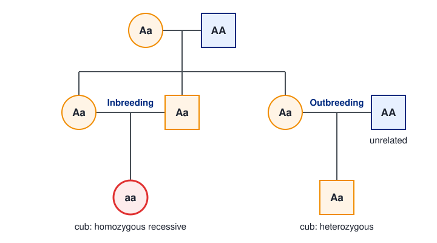
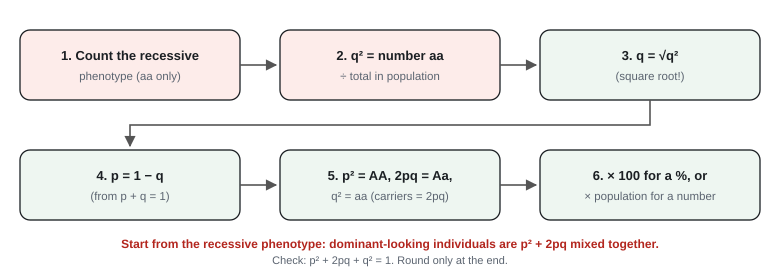
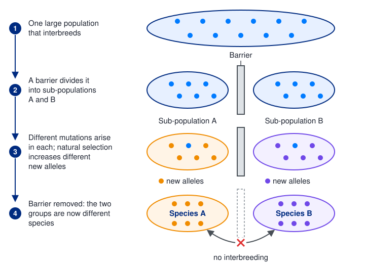

Classification, biodiversity and conservation
Life on Earth is enormously varied, and that variety is now under threat from human activity. This page covers how organisms are classified into three domains, the threats to biodiversity, how biodiversity and genetic diversity are defined and measured, how organisms are adapted to their niches, how Hardy-Weinberg, natural selection and reproductive isolation explain changing allele frequencies and new species, and how zoos and seed banks help conserve endangered species.
Spec4.14Classification and the three domains
(i) Know that classification organises the variety of life by how closely organisms are related, using similarities and differences in phenotype and genotype, built around the idea of a species. (ii) Explain how the scientific community critically evaluates new (molecular) data before accepting new groupings, such as the three domains Archaea, Bacteria and Eukarya.
Why and how we classify
- Classification puts organisms into groups based on how closely they are related, so the huge variety of life is easier to study and name. The modern aim is to show evolutionary relationships (phylogeny).
- Groups are based on similarities and differences in:
- phenotype: observable features (anatomy, cell structure, biochemistry, behaviour);
- genotype: DNA base sequences, rRNA sequences and the amino acid sequences of proteins.
- The groups form a hierarchy: each group (taxon) sits inside a bigger one, with no overlap: domain → kingdom → phylum → class → order → family → genus → species (e.g. "Don't Keep Plates Clean Or Family Gets Sick").
- Each species has a binomial name: Genus species, e.g. Homo sapiens. The genus has a capital letter, the species name doesn't; print in italics (underline when handwritten). Binomials are the same in every language, so scientists everywhere know exactly which organism is meant.
The species concept
- A species is a group of organisms with similar characteristics that can interbreed to produce fertile offspring.
- Horses and donkeys can mate, but their offspring (mules) are infertile, so horses and donkeys are separate species.
- Problems with the definition: it can't be tested for organisms that reproduce asexually, for fossils, or for populations that never meet; some different species occasionally produce fertile hybrids. So scientists also use phenotype and DNA comparisons.
- Subspecies: populations that look different and live apart but can still interbreed to give fertile offspring.
Molecular evidence
- All organisms share some molecules, e.g. rRNA, cytochrome c. Compare their sequences:
- More similar sequences (fewer differences in bases or amino acids) → more closely related → shared a more recent common ancestor.
- Molecular data are more reliable than appearance alone, because unrelated organisms can evolve similar features in similar environments (e.g. sharks and dolphins; the giant panda's "thumb").
- Results are shown as phylogenetic trees: species on branches that split closest to the tips share the most recent common ancestor.
The three domains
In the 1970s Carl Woese compared rRNA sequences of many prokaryotes and found two very different groups. Prokaryotes had been one kingdom, but the archaea differ from bacteria about as much as either differs from eukaryotes. A new top level, the domain, was introduced:
| Bacteria | Archaea | Eukarya | |
|---|---|---|---|
| Nucleus and membrane-bound organelles | no | no | yes |
| Cell wall | contains peptidoglycan | no peptidoglycan (other polymers) | cellulose (plants), chitin (fungi), none (animals) |
| Membrane lipids | ester-linked, unbranched fatty acids | ether-linked, branched chains | ester-linked, unbranched fatty acids |
| DNA | circular, no histones | circular, with histone-like proteins | linear chromosomes with histones |
| Ribosomes | 70S | 70S (but proteins and rRNA more like eukaryotes) | 80S in cytoplasm |
| RNA polymerase | one simple type | several, similar to eukaryotes | several, complex |
| Examples | E. coli, Staphylococcus | methanogens, extremophiles (hot springs, salt lakes) | plants, animals, fungi, protoctists |
Archaea share more molecular features with eukaryotes than with bacteria, so Archaea and Eukarya share a more recent common ancestor.
How the scientific community evaluates new data
- A scientist publishes the findings (data, methods, conclusions) in a scientific journal or presents them at a conference.
- Other experts peer review the work before publication, checking that the methods are valid and the conclusions follow from the data.
- Other scientists repeat the experiments or collect new evidence (e.g. sequence more genes or more species).
- If the new evidence supports the idea, it is accepted by the community and the classification changes. If not, it is modified or rejected.
Woese's proposal was resisted at first. It was accepted only after other scientists found further evidence (membrane lipids, RNA polymerase, more sequences) that supported it. Classification keeps changing as new evidence arrives.
The scientist publishes the findings in a scientific journal, presents them at conferences and shares data online, so that other scientists can examine them.
Before publication, the paper is peer reviewed: other experts in the field check that the methods are valid, the data support the conclusions and the work is original.
Peer review filters out flawed or poorly supported work before it enters the scientific record.
Other scientists repeat the experiments or collect new data, for example by sequencing more organisms, to see whether the results can be reproduced.
If the new evidence supports the idea, it gradually gains acceptance; if not, the idea is rejected or modified. The three-domain system is now widely accepted because sequencing many more genes has supported Woese's findings.
- Species: "(a group of) organisms that are capable of {interbreeding} and producing fertile offspring". "Inbreeding" is not accepted; similar appearance alone isn't credited.
- Evidence for the three domains: "(evidence from) molecular phylogeny"; "{similarities / differences} in {DNA / RNA / rRNA / proteins / ribosomes / membrane components / cell walls}". "Looking at / analysing DNA" with no detail is ignored.
- Most closely related: "share the most recent common ancestor", or "{most similarities / fewest differences} in named molecules (DNA base sequence, amino acid sequence)".
- Evaluation by the community: "peer review", "repetition of experiments by other scientists", "{analysis / evaluation} of the data", "published in a scientific journal".
- Deciding that an organism is a new species or type: analyse its phenotype, analyse sequences of named molecules, and show differences from known species.
- Subspecies, not species: "individuals can still breed together to produce fertile offspring".
Often asked as: name the domain, genus or species; describe the evidence for three domains; read a phylogenetic tree; 6-mark on reclassification by molecular evidence and peer review; how to decide whether populations are different species or subspecies; classify cells from a table of features.
- Describing the three domains when the question asks for the evidence for them (WBI12 Oct 2019 report).
- Writing a kingdom ("Animalia") or a group like "birds" or "prokaryotes" when asked for a domain (WBI12 Jan 2020 report).
- "Share a common ancestor" without "most recent" (WBI12 Jan 2020 report).
- "DNA analysis" with no detail. Say what is compared: "the base sequences of the DNA" (WBI12 Oct 2024, Jan 2025 reports).
- Peer review: most say "repeat the experiment" but few say what the community does with the data (evaluates, then accepts or rejects) (WBI12 Oct 2021 report).
- Mixing up the old kingdom name "Archaebacteria" with the domain Archaea.
- Carl Woese by name and rRNA as his evidence (WBI12 Oct 2019, Oct 2021).
- DNA evidence moved the giant panda into the bear family and the red panda away from it: similar adaptations (the extra "thumb") can mislead (WBI12 Jan 2026).
- A 6-mark on reclassifying birds: old groupings used phenotype (beak shape, size, diet); the new tree used molecular evidence (fewer differences = more recent common ancestor); and peer review. Level 3 needed both the molecular evidence and the review process (WBI12 Jan 2020).
- Gel electrophoresis banding patterns as molecular evidence (WBI12 Oct 2022).
Spec4.15The variety of life and the threat from humans
Know that the variety of life has become very large over time but is now threatened by human activity.
How the variety built up
Over about 3.5 billion years, mutation, natural selection and speciation (4.20) have produced millions of species, adapted to almost every habitat and niche on Earth. Mass extinctions have happened before, but species are now being lost far faster than the natural background rate, mainly because of human activity as the human population and its demand for food, land and resources grows.
Human threats and how each one reduces biodiversity
| Threat | How it reduces biodiversity |
|---|---|
| Habitat destruction: deforestation, draining wetlands, building, mining | species lose food, shelter and breeding sites; endemic species can be lost for ever |
| Habitat fragmentation (roads, farms splitting forests) | small isolated populations: less gene flow, inbreeding, loss of genetic diversity, local extinction |
| Agriculture: monocultures, hedgerow removal | one crop replaces many plant species, so fewer food sources and habitats for animals |
| Herbicides and pesticides | kill non-target plants and insects (e.g. pollinators) and the animals that depend on them |
| Pollution: fertiliser run-off, sewage, oil, plastics | eutrophication (algal blooms, low oxygen in water), poisoning, changes in salinity or pH |
| Over-exploitation: overfishing, hunting, poaching, logging | populations fall faster than they can reproduce |
| Climate change (from burning fossil fuels) | species can't move or adapt fast enough; ranges shift; coral bleaching and ocean acidification; can upset sex ratios in species whose sex depends on temperature |
| Invasive species and introduced predators or diseases | outcompete or eat native species that have no defences |

Always give cause → effect: "deforestation for farming destroys the habitat, so the tapir loses food and shelter, so fewer survive to breed". "Habitat loss" without the human cause, or "deforestation" without the effect, scores nothing.
Worked example: percentage change in a population
A population falls from 7400 to 1850.
% change = (new − original) ÷ original × 100 = (1850 − 7400) ÷ 7400 × 100 = −75% (a 75% decrease).
Divide by the original value, not the new one.
- Causes need a reason: "deforestation causing habitat loss"; "less food because of {deforestation / competition / overfishing}"; "{pollution / change in salinity} makes the habitat unsuitable"; "{disease / hunting}"; "a new predator". A cause with no effect scores nothing.
- Herbicide data: "as concentration increases the mean number of insect species decreases", with a figure; "fewer plant species → less food for insects → they leave or die". "Herbicides kill insects" is ignored.
- Biodiversity questions: biodiversity is not the same as population size.
Often asked as: explain why a named species declined (crocodile, frog, tapir, baobab, plover, tiger, snow leopard); effect of a herbicide on insect diversity; reintroducing beavers or wolves (6-mark); an invasive plant on an island; percentage change in population.
- Dividing by the final value in percentage change (WBI12 Jun 2023, Jan 2024 reports).
- "Herbicides kill insects" (WBI12 Jun 2019 report). Herbicides kill plants; the insects lose their food and habitat.
- Confusing biodiversity with the size of one population (WBI12 Jun 2022 report).
- Temperature-dependent sex determination: in crocodiles nest temperature sets the sex of the young, so global warming can skew the sex ratio (WBI12 Jan 2020).
- Introduced predators (cats, rats) eat eggs and chicks of ground-nesting birds (WBI12 Jan 2025).
- Losing a pollinator (e.g. bats) reduces seed production of the plants it pollinates (WBI12 Oct 2024).
- A keystone predator (wolves) changes a whole ecosystem: fewer elk → more young trees → more beavers and ponds → more species (WBI12 Jun 2022).
Spec4.16Biodiversity and endemism
Know what biodiversity and endemism mean.
Biodiversity
Biodiversity is the variety of living organisms in an area. It can be measured at three levels:
- Habitat (ecosystem) diversity: the range of different habitats in an area (a coral reef has many; a sandy desert few).
- Species diversity: the number of different species (species richness) and how evenly the individuals are spread between them (species evenness).
- Genetic diversity: the variety of alleles within a species or population.
Why high biodiversity matters: a diverse community is more stable. If a disease or a change in conditions hits one species, it affects only a small part of the community. A species with high genetic diversity is more likely to include individuals with alleles that let them survive a new disease or a changing climate.
Endemism
- A species is endemic if it is found naturally in only one geographical area and nowhere else in the world, e.g. lemurs in Madagascar, many species in the Galápagos Islands, the Komodo dragon on a few Indonesian islands.
- Endemism is common on islands and in isolated habitats (mountain tops, lakes), because populations there evolved in isolation.
- Endemic species are at high risk of extinction: if their one area is damaged, there is no population elsewhere.
- Areas with many endemic species and high biodiversity under threat are called biodiversity hotspots, and are priorities for conservation.
- Endemic: "found only in {one area / one geographical location}", naming the place if the question gives one (e.g. "only in Madagascar"). "Only in one habitat" is ignored.
- Species richness: "the number of (different) species in a {habitat / area / community}". "Number of organisms in a species" is not accepted; "variety of species" is ignored.
- Genetic diversity v species richness: "genetic diversity is within one species whereas species richness counts different species"; "genetic diversity is about {alleles / genotypes}". "Genes" is ignored.
- Measuring biodiversity: count the species (richness), count individuals of each species, calculate the index of diversity; for genetic diversity use the heterozygosity index; compare with another habitat or an earlier time.
Often asked as: define endemic (very common, often 1 mark); define species richness; describe how to measure or compare biodiversity (3 marks); difference between genetic diversity and species richness.
- Defining species richness as "the number of individuals of a species" (that is abundance) (WBI12 Oct 2022, Jan 2024 reports).
- Writing "genes" instead of alleles for genetic diversity.
- Writing "biodiversity index" with no named index and no comparison (WBI12 Oct 2024 report).
- Species evenness (how many individuals each species has) as the second part of species diversity (WBI12 Oct 2024).
- To measure species richness you need the number of species and the size of the area sampled; a whole national park is not "the habitat" (WBI12 Jun 2022).
Spec4.17Measuring biodiversity: species richness and the heterozygosity index
Know how to measure biodiversity within a habitat (species richness) and within a species (genetic diversity, using the heterozygosity index: number of heterozygotes ÷ number of individuals in the population).
Species richness in a habitat
- Species richness = the number of different species present. Counting every organism is rarely possible, so sample:
- Plants and slow-moving animals: quadrats placed at random coordinates (from a random number generator on a grid) so there is no bias; record every species.
- Along an environmental gradient (e.g. from shore inland): a transect, with quadrats at regular intervals.
- Moving animals: sweep nets, pitfall traps, kick sampling in streams, light traps.
- Take many samples, until new samples add no new species, and use the same method and sampling effort in each habitat you compare.
- Weakness: richness ignores how many of each species there are. Two habitats with 10 species each can be very different if one is dominated by a single species. The index of diversity (4.18) fixes this.
Genetic diversity within a species: the heterozygosity index
- An individual that has two different alleles at a gene locus is heterozygous. A population with many heterozygotes has many alleles, so more genetic diversity.
heterozygosity index (H) = number of heterozygotes ÷ number of individuals in the population
- H runs from 0 (no heterozygotes) to 1 (all heterozygous). It has no units and is not multiplied by 100.
- To find it: take DNA samples (e.g. hair, blood, feathers), use DNA analysis (sequencing or genotyping) to identify each individual's alleles at a chosen locus, count the heterozygotes, and divide by the total number sampled. Averaging H over many loci gives a picture of the whole genome.
- Low H suggests a small, isolated or inbred population (e.g. after a bottleneck or in a small captive group). It has fewer alleles, so it is less able to adapt to new diseases or changing conditions, and more likely to show harmful recessive conditions.
Worked example: heterozygosity index
500 frogs are genotyped at one locus: 118 are heterozygous.
H = 118 ÷ 500 = 0.236.
Rearranged: a population of 650 has H = 0.42. Number of heterozygotes = 0.42 × 650 = 273.
A number of organisms must be a whole number. Don't round it away to a decimal that implies part of an animal.
- H = "number of heterozygotes ÷ number of individuals in the population". Do not multiply by 100.
- How to find it: "analyse the DNA (of the frogs) / identify the number of heterozygotes"; "find the population size"; "divide the number of heterozygotes by the total".
- Genetic diversity: "number of different alleles present" or "heterozygosity index". If you give several methods, only the first is marked. "Allele frequency" and "genes" are ignored.
- Rearranging: answers such as 0.166 × 500 = 83 heterozygotes.
- Keeping alleles in a captive population: find individuals that carry rare alleles and use them in breeding with individuals carrying different alleles.
Often asked as: state the heterozygosity index equation; rearrange it to find the number of heterozygotes (very common); describe how to find H for a population; use H in a conservation decision.
- Writing the index of diversity, Hardy–Weinberg or mitotic index equation instead (WBI12 Jan 2021, Jan 2022 reports).
- Dividing heterozygotes by homozygotes instead of by the total.
- Using H when a Hardy–Weinberg calculation was needed (WBI12 Jun 2024 report).
- In a context question (e.g. organisms living in a sloth's fur), describing quadrats and pitfall traps instead of sampling the stated habitat.
The answer for a number of heterozygotes must be a whole number: e.g. 30 or 30.0 accepted, 30.012 rejected (WBI12 Oct 2024).
Spec4.18Index of diversity (D)
Use the index of diversity, D = N(N − 1) ÷ Σn(n − 1), to compare biodiversity in different habitats.
The formula
D = N(N − 1) ÷ Σn(n − 1)
- N = total number of individuals of all species in the sample.
- n = number of individuals of each species.
- Σ = "add up" (do n(n − 1) for every species, then add).
- A higher D means higher biodiversity. D takes into account both the number of species (richness) and how evenly individuals are spread between them (evenness).
- The smallest possible value is 1 (only one species). D has no upper limit of 1; with more species spread more evenly it gets bigger.
- A species with only one individual contributes 1 × 0 = 0 to the bottom line.
Step by step
- Add up all the individuals: N.
- Work out N(N − 1).
- For each species work out n(n − 1). Add a column to the table.
- Add the column: Σn(n − 1).
- Divide step 2 by step 4. Round only at the end, to the number of decimal places asked.
- Compare D values and say what they mean.
Sample counts from two fields (same quadrat area and method):
| Species | Field 1: n | n(n − 1) | Field 2: n | n(n − 1) |
|---|---|---|---|---|
| clover | 12 | 132 | 24 | 552 |
| buttercup | 8 | 56 | 3 | 6 |
| daisy | 6 | 30 | 2 | 2 |
| plantain | 3 | 6 | 1 | 0 |
| dandelion | 1 | 0 | 0 | 0 |
| Total | N = 30 | Σ = 224 | N = 30 | Σ = 560 |
Worked example: comparing two fields
Field 1: N(N − 1) = 30 × 29 = 870. D = 870 ÷ 224 = 3.8839 → 3.88 (2 d.p.).
Field 2: N(N − 1) = 870. D = 870 ÷ 560 = 1.5536 → 1.55 (2 d.p.).
Conclusion: Field 1 has the higher biodiversity (3.88 > 1.55). It has more species, and its individuals are spread more evenly; Field 2 is dominated by clover.
A sample from a rock pool contains: limpets 8, periwinkles 5, anemones 4, crabs 2, starfish 1. So N = 8 + 5 + 4 + 2 + 1 = 20.
Work out n(n − 1) for each species: 8 × 7 = 56, 5 × 4 = 20, 4 × 3 = 12, 2 × 1 = 2, 1 × 0 = 0.
A species with only one individual contributes nothing to the sum, but it still counts towards N.
Σn(n − 1) = 56 + 20 + 12 + 2 + 0 = 90.
N(N − 1) = 20 × 19 = 380.
D = 380 ÷ 90 = 4.22.
Watch the rounding instruction: 2 d.p. and 2 s.f. are different. 1.5536 is 1.55 to 2 d.p. but 1.6 to 2 s.f. Keep the full values of N(N − 1) and Σn(n − 1) and round once, after dividing.
A conclusion needs the comparison and the values: "Habitat A has higher biodiversity because its D is higher (3.88 compared with 1.55)".
What a change in D tells you
- D falls after pollution, an invasive species or habitat damage: some species are lost, or one species becomes dominant. Say why, e.g. "the invasive weed blocks light, so other plants die, reducing food and habitat for animals".
- Only compare D values from samples collected the same way (same area, same method, same time of year), because D depends on how you sample.
- Marks: N(N − 1) correct; Σn(n − 1) correct; D to the stated d.p. (ECF from your working).
- Fill in the n(n − 1) column before adding. If a table gives n(n − 1) but not n, work out n.
- Include every species in the table: leaving one out lost a mark (WBI12 Oct 2022).
- Conclusion: "habitat 1 has higher biodiversity / a higher index of diversity" with the values or a reason. A reason without a conclusion scores 0.
Often asked as: calculate D from a partly completed table (a staple from Jun 2021 onwards); decide which habitat has higher biodiversity and agree or disagree with a statement; interpret a fall in D after an invasive weed or sewage.
- Using the number of species for N (e.g. 7 × 6) instead of the total number of individuals (WBI12 Jun 2024 report).
- Wrong rounding or ignoring the d.p. asked (WBI12 Oct 2022, Jan 2025 reports).
- Writing the heterozygosity or Hardy–Weinberg equation when asked to name the formula (WBI12 Jun 2022 report).
- Stopping after "D decreased" when an explanation is asked (WBI12 Jan 2024 report).
Sewage pollution: D falls as sensitive species (e.g. mayfly nymphs) disappear and tolerant ones (e.g. bloodworms, sludgeworms) become dominant (WBI12 Oct 2025).
Spec4.19Niche and adaptation
Know what a niche is, and discuss examples of behavioural, anatomical and physiological adaptations of organisms to their environment.
Habitat and niche
- Habitat: the place where an organism lives (its address).
- Niche: the role of an organism in its habitat (its job): what it eats, when and where it feeds, what eats it, how it interacts with other species (biotic factors) and the range of physical conditions it tolerates, such as temperature, light, pH, water (abiotic factors).
- Two species cannot occupy exactly the same niche in the same habitat for long: one will outcompete the other (competitive exclusion). Species that share a habitat avoid this by having different niches, e.g. birds feeding at different heights in a tree, or wading birds with different beak lengths taking prey from different depths of mud.
Adaptations
An adaptation is an inherited feature that makes an organism better suited to its environment, so it is more likely to survive and reproduce. There are three types:
| Type | Meaning | Examples |
|---|---|---|
| Anatomical (structural) | a body structure, inside or out | thick fur or blubber (insulation); small ears and a compact body (small SA : V, less heat loss); streamlined shape and webbed feet (swimming); long claws (digging); camouflage, warning colours and mimicry; rolled leaves, hairs and sunken stomata in marram grass (less water loss); spines instead of leaves in cacti |
| Physiological | how processes inside the body work | producing venom or poison; antifreeze proteins in polar fish; producing very concentrated urine (desert mammals); tolerating salt; enzymes that work at high temperatures (thermophiles) |
| Behavioural | what the organism does | migration; hibernation; courtship displays; huddling (penguins); basking in the sun (lizards); being active at night in deserts; caring for eggs or young (e.g. carrying eggs in the mouth) |
For "explain how X is adapted", always link feature → function → survival: "large paws spread the weight so the snow leopard doesn't sink into snow, so it can chase prey". "It has fur" or "it helps it survive" alone scores nothing. Use details in the photo or the stem.
- Niche: "the role of an organism in its {environment / habitat / ecosystem}"; both biotic and abiotic parts accepted.
- Classifying: bright colours / warning colouration = anatomical; poison = physiological; mimicry = anatomical (physiological also accepted once); migration = behavioural; an extra "thumb" = anatomical; a display = behavioural.
- Typical linked points: "webbed feet to paddle through water"; "long wings to fly long distances / glide"; "thick fur to insulate"; "streamlined shape reduces resistance when swimming"; "blubber for insulation"; "tendrils secure the shoot so it can climb higher, reach more light, photosynthesise more"; "large hoof surface area stops it sinking in sand". "Keep warm" alone is ignored; "camouflage" for bright warning colours is wrong.
Often asked as: define niche; classify given adaptations as anatomical, physiological or behavioural; explain how an animal in a photo (penguin, snow leopard, wombat, mimic octopus) is adapted; suggest the advantage of a feature (tendrils, mouthbrooding); two species sharing a habitat.
- Calling poison "behavioural" or writing "psychological" for physiological (WBI12 Oct 2019, Jan 2022 reports).
- Calling bright colours "camouflage" (WBI12 Oct 2019 report).
- Vague "it has wings" with no function, or fewer points than the question asks (WBI12 Oct 2020, Jun 2024 reports).
- Confusing niche (role) with habitat (place).
- Lamarckian wording: "the animal grew thick fur because it was cold". Individuals don't change to adapt; those that already had the useful allele survived (4.20).
- Warning colouration and mimicry are classed as anatomical, not behavioural (WBI12 Oct 2019, Oct 2023).
- Mouthbrooding (a fish carrying fertilised eggs in its mouth) increases survival of the eggs by reducing predation (WBI12 Jun 2023).
- Beavers and elk compete because they have similar niches (both eat young trees) (WBI12 Jun 2022).
Spec4.20Hardy–Weinberg, natural selection and speciation
(i) Use the Hardy–Weinberg equation to see whether allele frequencies in a population are changing over time. (ii) Know that allele frequencies change through mutation and natural selection. (iii) Explain how reproductive isolation lets populations build up different genetic information, which can lead to new species.
The Hardy–Weinberg principle
In a population the allele frequencies stay the same from one generation to the next (the population is in equilibrium) as long as:
- the population is very large;
- mating is random;
- there is no mutation;
- there is no migration in or out (no gene flow);
- there is no natural selection (all genotypes survive and reproduce equally well).
If measured allele frequencies change between generations, one or more of these conditions is not being met: evolution is happening.
The equations (both are given in the exam)
For a gene with two alleles, A (dominant) and a (recessive):
p + q = 1
p² + 2pq + q² = 1
- p = frequency of allele A; q = frequency of allele a.
- p² = frequency of genotype AA; 2pq = Aa (heterozygotes, carriers); q² = aa.
- Frequencies are decimals between 0 and 1. Multiply by 100 for a percentage, or by the population size for a number of individuals.
Always start from q²
The only genotype you can see is the homozygous recessive one: an individual with the recessive phenotype must be aa. Individuals with the dominant phenotype could be AA or Aa, so you can't count p² directly.

Worked example: carrier frequency of a recessive condition
A recessive genetic disorder affects 1 in 2500 people. What proportion are carriers?
q² = 1 ÷ 2500 = 0.0004
q = √0.0004 = 0.02
p = 1 − 0.02 = 0.98
Carriers = 2pq = 2 × 0.98 × 0.02 = 0.0392 (3.92%, about 1 person in 26).
In a town of 50 000 people: 0.0392 × 50 000 = 1960 carriers.
Worked example: the dominant-phenotype trap
In 1000 beetles, 640 are black (dominant, B_) and 360 are brown (recessive, bb).
Wrong: p² = 640 ÷ 1000 = 0.64. The black beetles include both BB and Bb.
Right: q² = 360 ÷ 1000 = 0.36 → q = 0.6 → p = 0.4.
BB = p² = 0.16 (160 beetles); Bb = 2pq = 2 × 0.4 × 0.6 = 0.48 (480 beetles); bb = 0.36 (360).
Check: 160 + 480 = 640 black beetles. ✓
Worked example: is the allele frequency changing?
A snail population has yellow shells (recessive, yy). In year 1, 84 of 600 snails are yellow; in year 10, 54 of 600 are.
Year 1: q² = 84 ÷ 600 = 0.14 → q = √0.14 = 0.37.
Year 10: q² = 54 ÷ 600 = 0.09 → q = √0.09 = 0.30.
The frequency of the yellow allele has fallen (0.37 → 0.30), so the population is not in Hardy–Weinberg equilibrium: the allele frequency is changing, e.g. because thrushes see and eat more yellow snails (natural selection).
In a population of moths, 9 % are pale, the phenotype caused by the recessive genotype aa. Find the percentage of heterozygous (carrier) moths.
Only aa individuals show the recessive phenotype, so q² = 0.09.
Always start from the recessive phenotype, because AA and Aa look the same and cannot be counted separately.
q = √0.09 = 0.3, so p = 1 − 0.3 = 0.7.
Heterozygotes: 2pq = 2 × 0.7 × 0.3 = 0.42, so 42 % are carriers. Homozygous dominant: p² = 0.49, or 49 %.
Check: 0.49 + 0.42 + 0.09 = 1.00.
How allele frequencies change
- Mutation is a random change in DNA that creates new alleles. It is the original source of all genetic variation.
- Natural selection, step by step:
- There is variation in the population, caused by mutation (and the reshuffling of alleles in meiosis).
- A selection pressure acts (a predator, disease, climate, competition for food).
- Individuals with an advantageous allele are more likely to survive and reproduce.
- They pass the allele on to their offspring.
- Over many generations the frequency of that allele increases in the population (and the disadvantageous allele becomes rarer).
- Example: when a virus spreads through a rabbit population, rabbits with an allele that gives resistance survive and breed, so the resistance allele becomes more common in later generations.
There is variation within the population, caused by different alleles. New alleles arise by mutation.
A selection pressure acts on the population, for example a predator, a disease, a shortage of food or a change in climate.
Individuals with an allele that gives an advantage under this pressure are more likely to survive and reproduce. Individuals without it are more likely to die before reproducing.
The survivors pass the advantageous allele to their offspring.
Over many generations the frequency of the advantageous allele in the gene pool increases, and the population becomes better adapted to its environment.
Individuals do not change during their lifetime; it is the proportion of individuals carrying the allele that changes.
Reproductive isolation and speciation
Speciation is the formation of new species. It happens when two populations can no longer interbreed to produce fertile offspring.
- A population is split into two groups that can't interbreed: reproductive isolation, so no gene flow between them.
- Different mutations arise in each group.
- Each group faces different selection pressures (food, climate, predators), so different alleles are selected for. Chance (genetic drift) also changes allele frequencies, especially in small populations.
- Over many generations the two gene pools accumulate different genetic information: allele frequencies, then phenotypes, diverge.
- Eventually, even if they meet again, members of the two groups can't interbreed to produce fertile offspring: they are separate species.

Ways populations become reproductively isolated:
| Type | Cause | Examples |
|---|---|---|
| Geographical → allopatric speciation | a physical barrier separates them: sea, river, mountain range, a new island, separate lakes | finches or honeycreepers on different islands; fish in separate crater lakes |
| Seasonal / temporal | they breed or flower at different times | plants flowering at different times of year |
| Behavioural | different courtship songs or displays, so they don't recognise each other as mates | birds with different songs |
| Mechanical | reproductive organs or flowers no longer fit | changes in flower shape and pollinators |
| Gametic | sperm and egg can't fuse (e.g. egg-binding proteins no longer complementary) | sea urchins releasing gametes into the sea |
Isolation within the same area (seasonal, behavioural, mechanical, gametic) can lead to sympatric speciation.
- Hardy–Weinberg route: recessive phenotype → q² as a decimal (e.g. 16 ÷ 100 = 0.16) → q = √q² → p = 1 − q → p², 2pq, q². "q² correctly calculated" is a separate mark, and there is no ECF from a wrong q² step. Give % or numbers of individuals as asked.
- Showing the frequency is changing: "count the number of (recessive phenotype) individuals / DNA analysis to identify the alleles", "use the Hardy–Weinberg equation", "compare the allele frequency with previous generation(s)".
- Selection: "mutation(s) occurred"; "(new) allele for the named feature"; "selective advantage / more likely to survive and reproduce"; "pass the allele to offspring"; "allele frequency increases". Only 3 marks without the named feature. "Genes" is ignored.
- Speciation: "geographical isolation, so no gene flow"; "different selection pressures"; "mutation → different alleles"; "advantageous alleles passed on"; "accumulation of different genetic information"; "can no longer interbreed to produce fertile offspring". Calling populations "species" before they are is rejected.
Often asked as: Hardy–Weinberg calculations (percentages, numbers, carriers); use the equation to show whether a frequency has changed; explain how selection changed a population (poison frogs, island mice, virus-resistant rabbits); 6-mark speciation in context (honeycreepers, cichlids, snow leopard subspecies, sea urchins).
- Treating the recessive phenotype frequency as q instead of q², i.e. not square-rooting: the biggest mark-loser in this topic (WBI12 Jun 2019, Oct 2022, Oct 2023 reports). Only about a third got full marks in Jun 2019.
- Taking the dominant phenotype as p².
- Giving 0.49 when the question asks for a percentage (49%), or an impossible answer (negative, or more individuals than the population).
- "Genes" instead of alleles; "advantageous genes" (many reports).
- Saying the environment or selection causes the mutation, or that individuals change to adapt (WBI12 Oct 2020, Jan 2025 reports). Mutations are random; selection acts on variation that already exists.
- Generic natural-selection essays with no reference to the stem stay at Level 1 (WBI12 Jun 2022, Jun 2023 reports). Forgetting the final step: "cannot produce fertile offspring, so a new species".
- Hardy–Weinberg tables where the numbers must add up to the total population (e.g. 400) (WBI12 Oct 2024).
- Founder effect and inbreeding accepted in speciation answers; genetic drift in small populations (WBI12 Oct 2022).
- Gametic isolation: a change in the egg's binding protein (a ZP3-like protein) means sperm no longer bind, so no fertilisation (WBI12 Jun 2025).
- Gene duplication (extra copies of the amylase gene AMY1) selected in populations eating high-starch diets (WBI12 Oct 2025).
- Distances from a map scale bar in standard form (WBI12 Jun 2023).
Spec4.21Zoos and seed banks in conservation
Evaluate how zoos and seed banks conserve endangered species and their genetic diversity, through scientific research, captive breeding, reintroduction and education.
In situ and ex situ
- In situ conservation protects species in their natural habitat (national parks, nature reserves, marine protected areas, anti-poaching patrols, controlling invasive species). It is the best option where possible, because it protects the whole ecosystem.
- Ex situ conservation keeps species outside their natural habitat: zoos, botanic gardens, seed banks, frozen sperm and embryo stores. It is a back-up when the habitat or wild population is too threatened.
Zoos
- Captive breeding programmes increase the number of individuals of endangered species.
- Keeping genetic diversity in a small captive population:
- Studbooks record the ancestry of every animal, so keepers can pair individuals that are not closely related and avoid inbreeding.
- Genetic analysis of the animals' alleles shows which carry rare alleles.
- Animals, sperm or embryos are exchanged between zoos worldwide; artificial insemination and IVF let distant or reluctant animals breed; frozen sperm can be used even after a male has died.
- Reintroduction of captive-bred animals to the wild (e.g. the Arabian oryx). It works only if the original cause of decline (habitat loss, hunting) has been removed and the habitat can support them.
- Scientific research: animal behaviour, nutrition, reproduction and diseases, which helps both captive and wild populations.
- Education: visitors learn about threats to species, which can change behaviour, encourage support for conservation laws and raise money.
Seed banks
- Seeds are collected from many plants of a species, from different populations, so the store contains as many different alleles as possible.
- Seeds are cleaned (to remove microbes), checked (e.g. X-rayed to see that an embryo is present), dried and stored frozen (about −20 °C). Drying and freezing slow metabolism and enzyme activity, prevent germination, and stop fungi and bacteria growing, so seeds stay alive for decades.
- Samples are germinated at intervals to check viability; plants are grown from old stock to collect fresh seed.
- Stored seeds can be used to reintroduce plants to the wild, to restore habitats, for research, and as a source of alleles for crop breeding (e.g. disease resistance from wild relatives of crop plants). Examples: the Millennium Seed Bank (UK), the Svalbard Global Seed Vault (Norway).
- Some seeds (recalcitrant seeds, e.g. cocoa, avocado, many tropical trees) die when dried or frozen. They are kept as living plants or by tissue culture, or their embryos are frozen in liquid nitrogen (−196 °C).
Seeds are collected from many individual plants of a species, across its range.
Seeds from many different parents carry a wider range of alleles, so the stored sample keeps more of the species' genetic diversity. Taking only a small fraction of the seeds does not harm the wild population.
The seeds are cleaned and checked, for example by X-ray, to make sure they contain a fully formed embryo and are not damaged or infested.
The seeds are dried to a low water content.
With little water, metabolic reactions almost stop, so the seeds do not germinate or use up their food stores, and ice crystals that would damage cells cannot form when they are frozen.
They are sealed in airtight containers and stored at about −20 °C.
Low temperature slows enzyme activity further and stops the growth of fungi and bacteria that would decompose the seeds.
Samples are germinated at intervals to check they are still viable. If germination falls too low, a sample is grown into adult plants to produce fresh seed for storage.
Evaluating zoos and seed banks
| Advantages | Disadvantages | |
|---|---|---|
| Zoos | protect animals from poaching, predators and disease; vet care and food; increase numbers; studbooks and exchanges keep genetic diversity; reintroduction; research; education and funding | small populations → inbreeding and loss of alleles; some species won't breed in captivity; expensive; animals may lose natural behaviour (hunting, avoiding predators), so reintroductions can fail; may carry diseases into wild populations; ethical concerns about keeping animals captive |
| Seed banks | seeds take little space, need less maintenance and cost than whole plants; huge numbers stored; seeds survive for a long time when dry and frozen; samples from many populations keep genetic diversity; protected from disease, fire and habitat loss; a source of alleles for crop breeding | seeds lose viability, so need regular germination tests and regrowing; recalcitrant seeds can't be stored this way; a sample may not contain all the alleles in the wild population; stored seeds don't evolve with changing conditions or new pests; plants are not conserved in their habitat |
"Evaluate" needs both sides and a judgement: e.g. "Captive breeding increases numbers and, with studbooks, keeps genetic diversity, but reintroduction only succeeds if the habitat is protected, so zoos work best alongside in-situ conservation." Always mention genetic diversity: it is the concept the mark scheme anchors on.
- Zoo roles: genetic analysis, stud books, captive breeding, maintaining genetic diversity / avoiding inbreeding, reintroduction (with detail), education, research, in-situ work.
- Genetic diversity in captive breeding: "analyse individuals' alleles", "use a stud book", "breed individuals with different alleles / from different populations / not closely related", "prevent loss of alleles". "Genes" and "prevent hybrids" are ignored.
- Why seeds, not whole plants: "take up less space, so more can be stored"; "need less maintenance / cost"; "survive longer / can be frozen". Two versions of the same point score only once.
- Seed bank process: collect from many plants (different alleles); disinfect or sterilise; X-ray to check viability; dry; freeze below 0 °C to prevent germination and microbial growth; germinate samples regularly and collect new seeds. "Low temperature" with no reason, "cool", or washing alone are ignored.
- Drying seeds: "prevents germination", "slows enzyme / metabolic reactions", "extends storage time", fewer microbes.
- Education: "teach people not to cut down / hunt X", "promote planting", awareness, donations, influencing policy.
Often asked as: 6-mark evaluation of zoos or a conservation plan (very common); describe how seed banks store seeds; why store seeds not plants; breeding a crop with a seed bank variety for disease resistance; using frozen sperm; wildlife corridors.
- Describing methods without explaining how they help (Level 1 only) (WBI12 Oct 2020, Jan 2021 reports).
- Writing only about increasing numbers when the question asks about genetic diversity (WBI12 Jun 2024 report).
- "Low temperature" instead of "below 0 °C / frozen"; washing seeds as the only step (WBI12 Jan 2023, Jan 2025 reports).
- "In case of extinction" as the reason for storing seeds rather than plants.
- Confusing pollen with seeds, or not knowing what a stud book is (WBI12 Jan 2022 report).
- Stud books, artificial insemination, IVF and exchanging animals between zoos (WBI12 Jan 2022).
- Frozen sperm 6-mark: advantages (many males, even dead ones; AI; genetic diversity; little space) and disadvantages (fewer sperm swim after thawing, shorter survival, DNA damage, cost); use the correlation coefficient given (WBI12 Oct 2024).
- Crocodile eggs incubated at a chosen temperature to get a useful sex ratio, with eggs collected from many nests for genetic diversity (WBI12 Jan 2020).
- Wild relatives of crop plants in seed banks as a source of disease-resistance alleles (bananas and Panama disease; eggplant and bacterial wilt) (WBI12 Jun 2019, Jan 2023).
- Cryopreservation of embryos at −196 °C for seeds that can't be dried (WBI12 Oct 2025).
- Wildlife corridors link isolated populations, allowing gene flow and outbreeding (WBI12 Oct 2025).
- Seed germination falls with storage time and depends on the container (sealed metal can best, cloth bag worst) (WBI12 Oct 2025).
Quick checks
A sample contains three species with 6, 3 and 1 individuals. What is the index of diversity, D?
N = 10, so N(N − 1) = 90. Σn(n − 1) = 30 + 6 + 0 = 36. D = 90 ÷ 36 = 2.50. Turning the fraction upside down gives 0.40, which is impossible because D can never be less than 1.
Of 40 animals tested, 14 show two bands for a gene on a DNA gel. What is the heterozygosity index?
Animals with two bands are heterozygous, so H = 14 ÷ 40 = 0.35. The value 0.65 is the proportion of homozygotes, the commonest mix-up.
In a population in Hardy-Weinberg equilibrium, 16 % of individuals have the recessive phenotype. What proportion are heterozygous?
q² = 0.16, so q = 0.4 and p = 0.6. Heterozygotes = 2pq = 2 × 0.6 × 0.4 = 0.48. The value 0.36 is p², the homozygous dominant frequency. A common error is to take q = 0.16 instead of square-rooting it.
Which observation best supports placing Archaea in a separate domain from Bacteria?
Woese's three-domain system was based on molecular evidence, especially rRNA sequences. Having no nucleus is shared with Bacteria, so it cannot separate them, and many archaea live in ordinary habitats.
Which is a physiological adaptation?
Slowing the heart rate is a change in how the body's processes work, so it is physiological. Blubber and sticky hairs are structures (anatomical), and migration is behavioural.
Why do zoos exchange animals between captive breeding programmes?
Pairing unrelated animals from different zoos is outbreeding: it keeps heterozygosity and genetic diversity high. Increasing homozygosity is what inbreeding does, which programmes try to avoid.
Why are seeds dried before being stored in a seed bank at −20 °C?
The embryo must stay alive. Drying makes the seed dormant by slowing enzyme activity, and with little water present, damaging ice crystals cannot form during freezing.